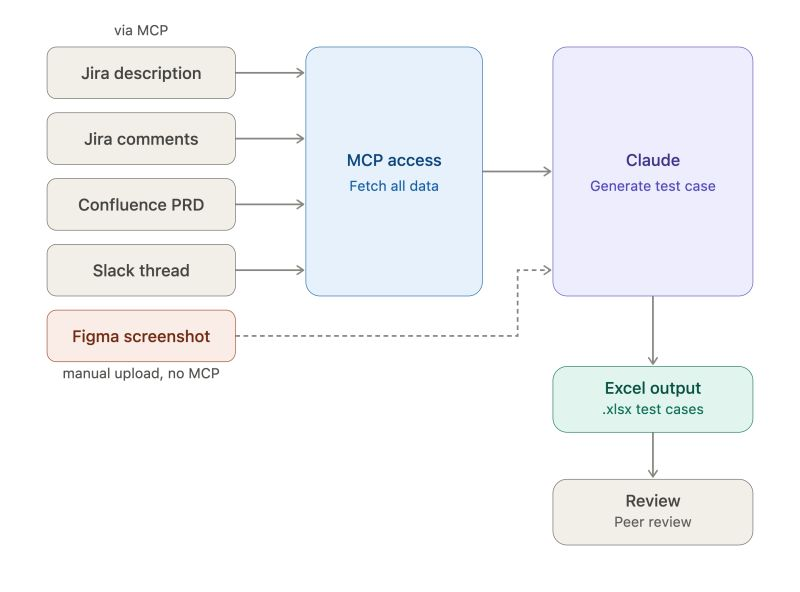

Beberapa bulan terakhir saya mulai pakai Claude untuk membuat test case, dan ternyata cukup membantu untuk pekerjaan QA sehari-hari.
Prosesnya dimulai dengan mengumpulkan semua source of truth requirement — bisa dari deskripsi tiket Jira, comment di tiket, PRD, sampai percakapan Slack. Saya pakai MCP agar Claude bisa langsung akses sumber-sumber itu tanpa copy-paste manual satu-satu. Saya beri instruksi agar Claude benar-benar membaca baris demi baris agar tidak ada requirement yang tertinggal. Kalau ada Figma, saya juga share screenshot-nya sebagai referensi visual.
Setelah semua source of truth terkumpul, selanjutnya Claude saya minta untuk menemukan discrepancy dari masing-masing requirement. Ini penting agar kita bisa segera konfirmasi ke tim Product ataupun Tech sebelum fitur selesai dibuat dan proses testing dimulai. Karena discrepancy requirement akan menjadi potensi bug di kemudian hari.
Dari semua sumber itu, Claude breakdown menjadi test case dengan format spesifik yang ditentukan — termasuk dengan Ground Truth di tiap scenario. Ini penting untuk mengurangi tingkat halusinasi dari AI. Output-nya langsung jadi file Excel dan siap untuk di-review sebelum masuk ke Test Repository.
Terakhir, semua flow di atas saya rangkum menjadi markdown file berupa CLAUDE.md untuk claude-code, ataupun di section instruksi untuk Claude Desktop. Agar di kemudian hari kita bisa memakai workflow yang sama ketika membuat test case.
Apakah ada teman-teman yang memakai workflow seperti ini juga? Atau malah ada yang memakai workflow lain yang lebih oke?